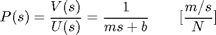
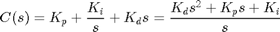
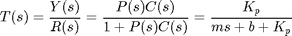
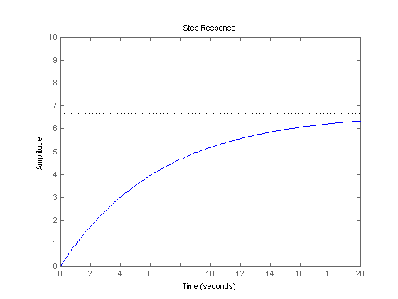
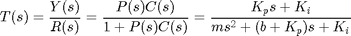
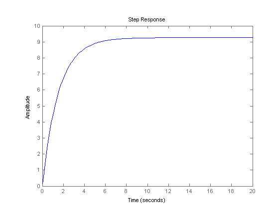
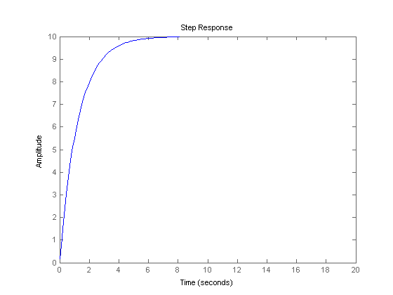
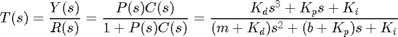

Cruise Control: PID Controller Design
Key MATLAB commands used in this tutorial are: tf , step , feedback
Contents
System model and parameters
The transfer function model for the cruise control problem is given below. Please see the Cruise Control: System Modeling page for the derivation.
(1)
The parameters used in this example are as follows:
(m) vehicle mass 1000 kg
(b) damping coefficient 50 N.s/m
(r) reference speed 10 m/s
Performance specifications
- Rise time < 5 s
- Overshoot < 10%
- Steady-state error < 2%
PID overview
The block diagram of a typical unity feedback system is shown below.

Recall from the Introduction: PID Controller Design page, the transfer function of a PID controller is
(2)
We can define a PID controller in MATLAB using the transfer function directly:
Kp = 1;
Ki = 1;
Kd = 1;
s = tf('s');
C = Kp + Ki/s + Kd*s
C =
s^2 + s + 1
-----------
s
Continuous-time transfer function.
Alternatively, we may use MATLAB's pid controller object to generate an equivalent continuous time controller as follows:
C = pid(Kp,Ki,Kd)
C =
1
Kp + Ki * --- + Kd * s
s
with Kp = 1, Ki = 1, Kd = 1
Continuous-time PID controller in parallel form.
Proportional control
The first thing to do in this problem is to find a closed-loop transfer function with a proportional control (C = Kp) added.
By reducing the unity feedback block diagram, the closed-loop transfer function with a proportional controller becomes:
(3)
Recall from the Introduction: PID Controller Design page, a proportional controller, Kp, decreases the rise time, which is desirable in this case.
For now, use Kp equal 100 and a reference speed of 10 m/s. Create a new m-file and enter the following commands.
m = 1000;
b = 50;
r = 10;
s = tf('s');
P_cruise = 1/(m*s + b);
Kp = 100;
C = pid(Kp);
T = feedback(C*P_cruise,1)
t = 0:0.1:20;
step(r*T,t)
axis([0 20 0 10])
T =
100
------------
1000 s + 150
Continuous-time transfer function.
 Note that we have used the MATLAB feedback command to simplify the block diagram reduction of the closed-loop system. Please verify for yourself that the result agrees with the closed-loop transfer function, T, derived above.
Running the m-file in MATLAB should give you the step response above. As you can see from the plot, neither the steady-state error nor the rise time satisfy our design criteria.
You can increase the proportional gain, Kp, to reduce the rise time and the steady-state error. Change the existing m-file so that Kp equals 5000 and rerun it in the MATLAB command window. You should see the following plot.
Kp = 5000; C = pid(Kp); T = feedback(C*P_cruise,1); step(r*T,t) axis([0 20 0 10])

The steady-state error is now essentially zero, and the rise time has been reduced substantially. However, this response is unrealistic because a real cruise control system generally can not change the speed of the vehicle from 0 to 10 m/s in less than 0.5 seconds due to power limitations of the engine and drivetrain.
Actuator limitations are very frequently encountered in practice in control systems engineering, and consequently, the required control action must always be considered when proposing a new controller. We will discuss this issue much more in subsequent tutorials.
The solution to this problem in this case is to choose a lower proportional gain, Kp, that will give a reasonable rise time, and add an integral controller to eliminate the steady-state error.
PI control
The closed-loop transfer function of this cruise control system with a PI controller (C = Kp + Ki/s) is:
(4)
Recall from the Introduction: PID Controller Design page, an addition of an integral controller to the system eliminates the steady-state error. For now, let Kp equal 600 and Ki equal 1 and see what happens to the response. Change your m-file to the following.
Kp = 600; Ki = 1; C = pid(Kp,Ki); T = feedback(C*P_cruise,1); step(r*T,t) axis([0 20 0 10])
Now adjust both the proportional gain, Kp, and the integral gain, Ki, to obtain the desired response. When you adjust the integral gain, Ki, we suggest you to start with a small value since a large Ki can destabilize the response. When Kp equals 800 and Ki equals 40, the step response will look like the following:
Kp = 800; Ki = 40; C = pid(Kp,Ki); T = feedback(C*P_cruise,1); step(r*T,t) axis([0 20 0 10])
PID control
For this particular example, no implementation of a derivative controller was needed to obtain the required output. However, you might want to see how to work with a PID control for the future reference. The closed-loop transfer function for this cruise control system with a PID controller (C = Kp + Ki/s + Kd*s) is:
(5)
Let Kp equal 1, Ki equal 1, and Kd equal 1 and enter the following commands into an new m-file.
Kp = 1; Ki = 1; Kd = 1; C = pid(Kp,Ki,Kd); T = feedback(C*P_cruise,1);
Plot the step response and adjust all of Kp, Kd, and Ki until you obtain satisfactory results. We will leave this as an exercise for you to work on.
Suggestion: Usually choosing appropriate gains requires a trial and error process. The best way to attack this tedious process is to adjust one variable (Kp, Ki, or Kd) at a time and observe how changing one variable influences the system output. The characteristics of Kp, Ki, and Kd are summarized in the Introduction: PID Controller Design page.